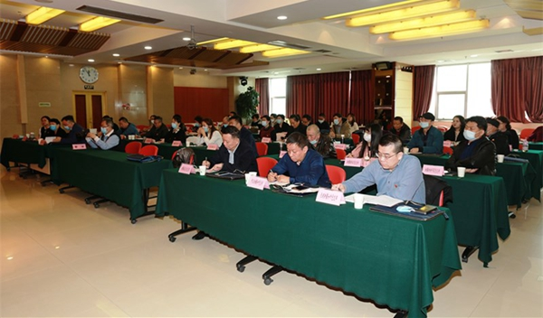

新疆注册会计师资产评估师行业党委多措并举 扎实推进行业党史学习教育
2021-04-08 04:12
3月25日，为深入贯彻习近平总书记在党史学习教育动员大会上的重要讲话精神，在全国注册会计师资产评估行业党史学习教育动员部署会之后，新疆注册会计师资产评估师行业党委（以下简称“行业党委”）迅速组织召开行业党史学习教育再动员再部署会议，引导全行业从党的百年伟大奋斗历程中汲取前进的智慧和力量，积极推动行业高质量发展。分管厅领导、行业党委书记朱洁同志出席会议并讲话。行业各基层党组织书记及党务工作者参加了会议。
朱洁指出，确保行业党史学习教育学深学透，要做到“三个结合”。要与学习新中国史、改革开放史、社会主义发展史相结合。要与贯彻落实第三次中央新疆工作座谈会精神、完整准确理解新时代党的治疆方略相结合。要与学习贯彻习近平总书记对行业“主题主线”指示批示精神相结合，引导行业广大党员做到学思用贯通，知信行统一，不断提高政治判断力、政治领悟力和政治执行力。

朱洁强调，确保行业党史学习教育紧贴行业实际，要在三个方面“下功夫”。一要通过党史学习教育，围绕学史明理、学史增信，在强化行业诚信建设上下功夫。二要通过党史学习教育，围绕学史崇德、学史力行，在强化行业责任担当上下功夫。三要通过党史学习教育，围绕学党史、悟思想、办实事、开新局，在强化行业凝心聚力上下功夫。
朱洁指出，确保行业党史学习教育实践成果落到实处，要在“办实事”上见实效。一是行业党委要聚焦行业人才队伍流失等急难愁盼的问题，切实在“为执业机构解难题”方面见实见效。二是基层党组织要聚焦广大从业人员的烦心事、揪心事，切实在“我为群众办实事”方面见实见效。三是广大党员、从业人员要聚焦提升自身职业道德修养和业务本领，切实在“我为行业添光彩”方面见实见效。
朱洁要求，确保行业党史学习教育抓实抓细，必须做到“四有”。学习教育有部署、有落实、有督导、有成效。各基层党组织要及时研究制定学习方案、充分利用“三会一课”、主题党日等载体，全面贯彻落实行业党史学习教育的各项工作部署。行业党委将不定期对各基层党组织党史学习教育重点任务落实情况进行督促指导，确保督导全覆盖。同时，要定期对党史学习教育中的好经验好做法进行总结提炼、宣传推广，在全行业大力营造学习党史的浓厚氛围，以优异成绩向党的百年华诞献礼。
 京公网安备 11010802022122号
京公网安备 11010802022122号